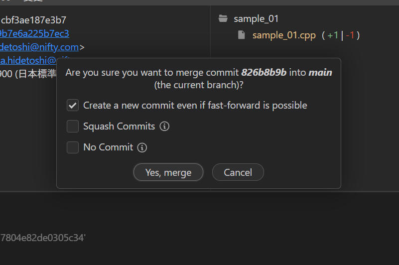
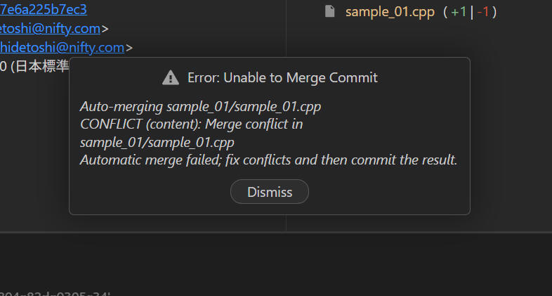
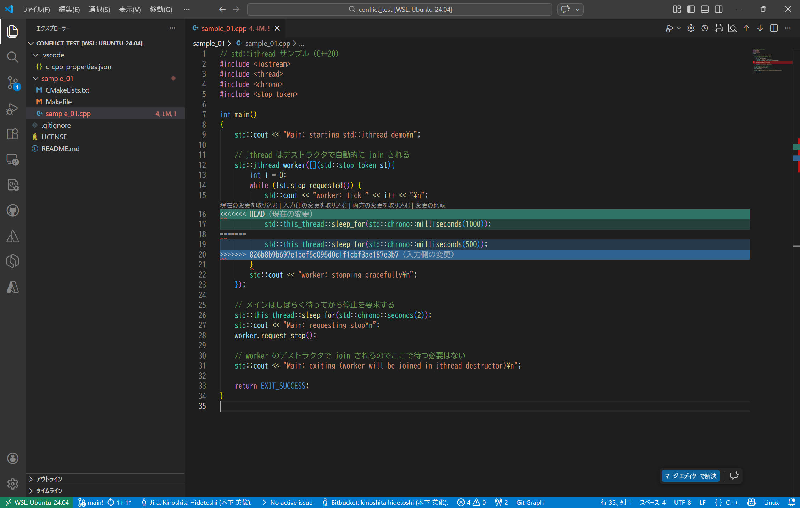
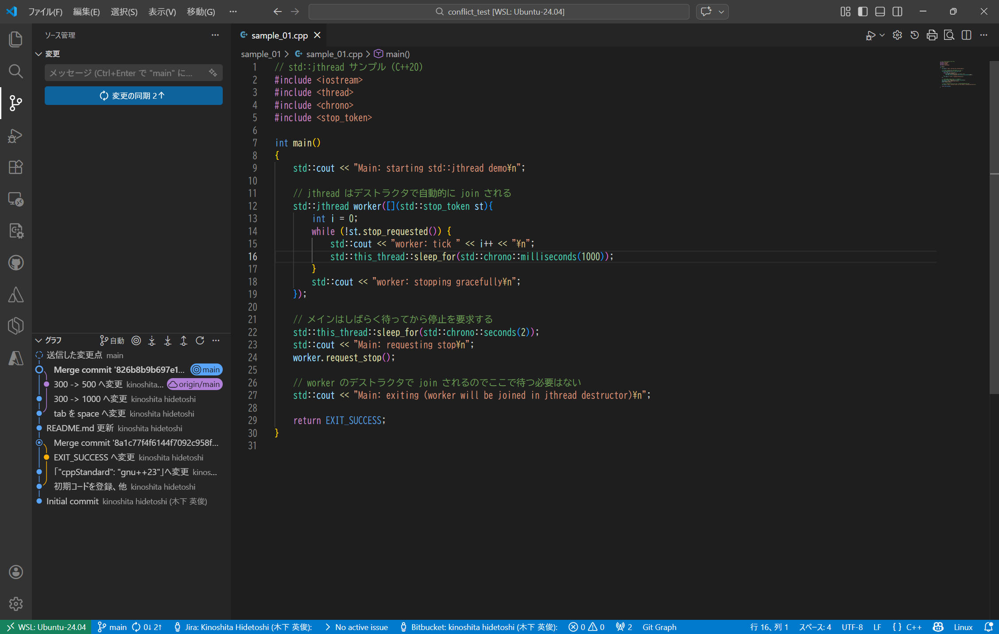

git を使っていると、時々 Conflict (競合) という問題に遭遇します。
久し振りだったりすると、どうしたらよいのか、焦っちゃいますので、超簡単な例をここに記載してみたいと思います。
Git の conflict（競合） は、複数の変更が同じ箇所にぶつかり、Git がどちらを採用すべきか判断できない状態を言います。マージやコミット、リベースのときに発生し、手動で解決する必要があります。
conflict が起きる仕組み：
Git は自動で判断できないため、該当箇所にマーカーを挿入してユーザーに選択を委ねることになります。
conflict の表示形式：
ファイル内に次のようなマーカーが入ります。
<<<<<<< HEAD あなたのブランチの変更 ======= マージしようとしているブランチの変更 >>>>>>> feature-branch
conflict の解決手順（一般的な流れ）：
github 環境を使って実際に conflict を発生させてみます。
(1)
サンプルとして下記コードを使用します。このコードが現在 github のリモートリポジトリへ登録されている最新コードと思ってください。
// std::jthread サンプル（C++20）
#include <iostream>
#include <thread>
#include <chrono>
#include <stop_token>
int main()
{
std::cout << "Main: starting std::jthread demo\n";
// jthread はデストラクタで自動的に join される
std::jthread worker([](std::stop_token st){
int i = 0;
while (!st.stop_requested()) {
std::cout << "worker: tick " << i++ << "\n";
std::this_thread::sleep_for(std::chrono::milliseconds(300));
}
std::cout << "worker: stopping gracefully\n";
});
// メインはしばらく待ってから停止を要求する
std::this_thread::sleep_for(std::chrono::seconds(2));
std::cout << "Main: requesting stop\n";
worker.request_stop();
// worker のデストラクタで join されるのでここで待つ必要はない
std::cout << "Main: exiting (worker will be joined in jthread destructor)\n";
return EXIT_SUCCESS;
}
(2) Aさんが steep_for の値を 300 ⇨ 500 へ変更し、commit & push します
std::this_thread::sleep_for(std::chrono::milliseconds(500));
(3) Bさんが steep_for の値を 300 ⇨ 1000 へ変更し、commit & push します
std::this_thread::sleep_for(std::chrono::milliseconds(1000));
この Bさん の操作でエラーになりました。vscode の画面だと以下を表示しました。
(4)「コマンド出力を表示する」をクリックすると、下記内容を表示しました。
> git pull --tags origin main From github.com:kinoshita-hidetoshi/conflict_test * branch main -> FETCH_HEAD hint: You have divergent branches and need to specify how to reconcile them. hint: You can do so by running one of the following commands sometime before hint: your next pull: hint: hint: git config pull.rebase false # merge hint: git config pull.rebase true # rebase hint: git config pull.ff only # fast-forward only hint: hint: You can replace "git config" with "git config --global" to set a default hint: preference for all repositories. You can also pass --rebase, --no-rebase, hint: or --ff-only on the command line to override the configured default per hint: invocation. fatal: Need to specify how to reconcile divergent branches.
要約すると、git pull を失敗している理由は
「ローカルとリモートの履歴が分岐していて、Git が “マージするのか / リベースするのか / fast‑forward のみ許可するのか” を判断できないため」
ということらしいです。
Git 2.27 以降は、pull のデフォルト動作をユーザーが明示的に設定していない場合、このエラーを出して止まるようになっているそうです。
参考
Git に「どう統合するか」の方針を伝えてあげれば、次回からこの設定に従って自動的に処理されるようになります。コンソールから下記コマンドで設定できます。
(5) ローカルとリモートが分岐しているので、どれを採用するか決める必要があります。
よくある選択肢は下記３つです。
参考に記載の git config pull.*** を設定せず、ここでは手動で解決します。
vscode の画面上から remote の HEAD を選択して Merge (Merge into current branch...) します。
下図では "Git Graph" というプラグインの画面で紹介していますが、他のツールを使用する場合も同様です。
こんな画面を表示したので、そのまま変更せずに［Yes, merge］をクリックしました。

ここで Conflict という表示が出ました。 ［Dismiss］ をクリックします。

ここで最初に説明した conflict の内容を表示しました。

表示内容は以下の通りです。
// std::jthread サンプル（C++20）
#include <iostream>
#include <thread>
#include <chrono>
#include <stop_token>
int main()
{
std::cout << "Main: starting std::jthread demo\n";
// jthread はデストラクタで自動的に join される
std::jthread worker([](std::stop_token st){
int i = 0;
while (!st.stop_requested()) {
std::cout << "worker: tick " << i++ << "\n";
<<<<<<< HEAD
std::this_thread::sleep_for(std::chrono::milliseconds(1000));
=======
std::this_thread::sleep_for(std::chrono::milliseconds(500));
>>>>>>> 826b8b9b697e1bef5c095d0c1f1cbf3ae187e3b7
}
std::cout << "worker: stopping gracefully\n";
});
// メインはしばらく待ってから停止を要求する
std::this_thread::sleep_for(std::chrono::seconds(2));
std::cout << "Main: requesting stop\n";
worker.request_stop();
// worker のデストラクタで join されるのでここで待つ必要はない
std::cout << "Main: exiting (worker will be joined in jthread destructor)\n";
return EXIT_SUCCESS;
}
(6) Conflict 部分を解決します。
ここでは下記の通り std::this_thread::sleep_for(std::chrono::milliseconds(1000)); の方を採用します。修正したら保存します。
vscode 画面上で ［現在の変更を取り込む］ をクリックでも良いです。
// std::jthread サンプル（C++20）
#include <iostream>
#include <thread>
#include <chrono>
#include <stop_token>
int main()
{
std::cout << "Main: starting std::jthread demo\n";
// jthread はデストラクタで自動的に join される
std::jthread worker([](std::stop_token st){
int i = 0;
while (!st.stop_requested()) {
std::cout << "worker: tick " << i++ << "\n";
std::this_thread::sleep_for(std::chrono::milliseconds(1000));
}
std::cout << "worker: stopping gracefully\n";
});
// メインはしばらく待ってから停止を要求する
std::this_thread::sleep_for(std::chrono::seconds(2));
std::cout << "Main: requesting stop\n";
worker.request_stop();
// worker のデストラクタで join されるのでここで待つ必要はない
std::cout << "Main: exiting (worker will be joined in jthread destructor)\n";
return EXIT_SUCCESS;
}
(7) 変更を保存後、再度 commit します。
vscode 画面を見ると、これら操作に伴う変更は２件となっていました。

(8) ［変更の同期 2↑］をクリックします
これで修正結果を git へコミットすることができました。以上で完了です。
本ページの情報は、特記無い限り下記 MIT ライセンスで提供されます。
| 2026-02-09 | - | 新規作成 |